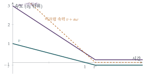

STEP III 1997, 문제 10
계속 읽기 전에 문제를 먼저 읽어 보자. 문제는 STEP Support Programme의 문제 데이터베이스에 있다: step.maths.org/questions/97-s3-q10
도입
구슬의 뒤쪽을 손가락으로 눌러서 구슬이 뒤로 회전하면서 앞으로 튀어 나가게 해 보자. 구슬은 손에서 멀어지며 미끄러지다가 느려지고, 멈춘 뒤, 마치 마음을 바꾼 것처럼 다시 굴러 돌아온다. 스누커(snooker) 선수들도 “스크루(screw)” 또는 “드로(draw)” 샷에서 같은 효과를 이용한다. 큐볼의 아래쪽을 쳐서 공이 뒤로 회전하게 하면, 공은 목적구에 부딪혀 멈춘 뒤 되돌아온다.
이 문제는 구슬을 그 자리에 딱 멈추게 하는 역회전(backspin)의 정확한 양과, 구슬이 처음 속력의 7분의 1로 되돌아오게 하는 역회전의 양을 묻는다. 계산에서는 선속도(linear velocity)와 각속도(angular velocity)라는 두 양을 추적하는데, 둘 다 같은 마찰력(frictional force)에 의해 변한다. 그 뒤에는 아름다운 지름길이 숨어 있다. 두 양의 어떤 조합은 마찰력에 의해 전혀 변하지 않는다.
회전 역학(rotational dynamics)은 2019년에 STEP 출제 범위에서 제외되었다. 여기서 필요한 것은 다음뿐이다. 질량 \(m\), 반지름 \(a\)인 속이 찬 구의 지름에 대한 관성 모멘트(moment of inertia)는 \(I = \frac25ma^2\)이고, 토크(torque) \(\tau\)는 \(I\dot\omega = \tau\)에 따라 각속도를 바꾼다. 이것은 \(m\dot v = F\)의 회전 버전이다.
시작하기 전에
구슬이 속도 \(v\)로 앞으로 움직이면서 각속도 \(\omega\)로 뒤로 회전한다. 구슬의 가장 아래 점은 탁자 위에서 얼마나 빠르게 움직이는가? 마찰력은 어느 방향으로 작용하는가?
가장 아래 점은 구슬 전체의 운동 때문에 \(v\)로 움직이고, 여기에 역회전 때문에 \(a\omega\)가 더해진다(역회전은 가장 아래 점을 앞으로 실어 나른다). 따라서 이 점은 \(v + a\omega\)로 앞으로 미끄러지고, 마찰력은 미끄러짐을 방해하는 방향인 뒤쪽으로 작용한다. 구슬은 \(v + a\omega = 0\)일 때에만 미끄러지지 않고 구른다(rolls without slipping).
차근차근 풀기
단계 1 마찰력이 하는 일
뒤쪽으로 작용하는 마찰력의 크기를 \(F\)라 하자. 이 힘은 \(v\)에 어떤 영향을 주는가? 중심에 대한 이 힘의 토크는 \(Fa\)이다. 이 토크는 역회전을 늘리는가, 줄이는가?
마찰력은 구슬을 감속시킨다. \(m\dot v = -F\)이므로 \(v = v_0 - \frac Fm t\)이다. 마찰력은 구슬의 아래쪽에서 뒤쪽으로 작용하므로 역회전을 방해하는 토크 \(Fa\)도 가한다. \(I\dot\omega = -Fa\)이고 \(I = \frac25ma^2\)이므로 \[\omega = \omega_0 - \frac{5F}{2ma}t.\] 구슬이 미끄러지는 동안 \(v\)와 \(\omega\)는 모두 일정하게 감소한다.
단계 2 딱 멈추기
구슬이 완전히 멈추려면 \(v\)와 \(\omega\)가 같은 순간에 \(0\)이 되어야 한다. 각각은 언제 \(0\)이 되는가?
\(v = 0\)이 되는 것은 \(t = \frac{mv_0}{F}\)일 때이고, \(\omega = 0\)이 되는 것은 \(t = \frac{2ma\omega_0}{5F}\)일 때이다. 두 값은 \(v_0 = \frac25a\omega_0\)일 때 같아지며, 즉 \[\frac{v_0}{a\omega_0} = \frac25. \qed\] 그 순간 구슬에는 선속도도 각속도도 없고, 마찰력(미끄러짐이 있을 때에만 작용한다)은 사라진다. 구슬은 그 자리에 머문다.
단계 3 되돌아오기
역회전이 더 크면 \(\omega\)가 아직 양수일 때 \(v\)가 \(0\)에 도달한다. 가장 아래 점은 여전히 앞으로 미끄러지고 있으므로 마찰력은 여전히 뒤쪽으로 작용한다. 그다음에는 무슨 일이 일어나고, 미끄러짐은 언제 멈추는가?
마찰력이 계속 구슬을 뒤로 밀기 때문에 \(v\)는 음수가 되고, \(\omega\)는 계속 감소한다. 미끄러짐은 \(v + a\omega = 0\)일 때 멈춘다. \[v_0 + a\omega_0 - \Bigl(\frac Fm + \frac{5F}{2m}\Bigr)t = 0, \qquad t^* = \frac{2m(v_0 + a\omega_0)}{7F}.\] 그 순간 \[v = v_0 - \frac{2(v_0 + a\omega_0)}{7} = \frac{5v_0 - 2a\omega_0}{7}.\] 이후 구슬은 미끄러지지 않고 구르며, 마찰력은 작용을 멈추고 \(v\)는 일정하게 유지된다. 구슬이 속력 \(\frac{v_0}{7}\)로 굴러 돌아오려면 \(5v_0 - 2a\omega_0 = -v_0\)이어야 하므로 \[\frac{v_0}{a\omega_0} = \frac13. \qed\]

돌아보기
두 양을 추적하라. 마찰력은 \(v\)와 \(\omega\)를 모두, 일정한 비를 이루는 비율로 바꾸었다.
힘이 언제 사라지는지 알아 두라. 미끄럼 마찰력은 미끄러짐이 있을 때에만 작용한다. 구슬이 구르기 시작하면 마찰력은 사라진다.
미끄럼 속력이 핵심 변수이다. 미끄럼 속력은 일차적으로 감소했고, 그것이 \(0\)이 되는 순간이 미끄러짐에서 구름으로 바뀌는 시점이었다.
숨은 수학
보존량
최종 속력에 더 빨리 도달하는 방법이 있다. 구슬이 탁자와 닿는 접촉점에 대한 구슬의 각운동량(angular momentum)을 생각하자. 마찰력은 바로 그 점에서 작용하므로 그 점에 대한 모멘트가 없고, 수직항력(normal reaction)과 중력은 모두 그 점을 지나는 연직선을 따라 작용한다. 따라서 구슬이 미끄러지는 동안 이 각운동량은 보존된다. 그 값은 \(mva\)(중심의 운동에서 오는 부분)에서 \(I\omega\)(역회전은 음으로 센다)를 뺀 것이다. \[L = mav - \tfrac25ma^2\omega.\] \(a\omega = -V\)인 상태로 속력 \(V\)로 구를 때 이 값은 \(maV + \frac25maV = \frac75maV\)이다. 이를 처음 값과 같게 놓으면 \[\tfrac75maV = mav_0 - \tfrac25ma^2\omega_0, \qquad V = \frac{5v_0 - 2a\omega_0}{7},\] 마찰력의 크기는 물론, 마찰력이 일정한지조차 언급하지 않고 같은 답을 얻는다. 최종 속력은 보존 법칙만으로 정해지며, 마찰력은 그 상태에 도달하는 데 걸리는 시간만을 결정한다.
스누커, 볼링, 테니스
같은 분석으로 많은 스포츠를 설명할 수 있다. 중심을 맞은 스누커 공은 처음에는 미끄러지다가 구르기 시작하며, 결국 처음 속력의 \(\frac57\)로 굴러간다(공식에서 \(\omega_0 = 0\)으로 놓아라). 옆 회전을 걸어 던진 텐핀 볼링공은 레인을 따라 미끄러지다가 구르기 시작할 때 “훅(hook)”을 그린다. 톱스핀을 걸어 친 테니스공은 급격히 떨어지는데, 이 경우 주된 효과는 공기역학적인 것이다. 회전하는 공이 주위의 공기를 휘게 하는 현상, 즉 마그누스 효과(Magnus effect)이다.
오늘날 회전 좌표계(rotating frame)에서의 겉보기 힘(fictitious force)으로 기억되는 가스파르귀스타브 코리올리(Coriolis)(11.5 절)는 1835년에 당구의 수학만을 다룬 책 Théorie mathématique des effets du jeu de billard(당구 효과의 수학적 이론)를 썼다. 그는 여러 가지 가운데 특히, 회전을 걸어 친 공은 미끄러지는 동안 포물선(parabola)을 그리다가 이후 곧게 굴러간다는 것을 보였고, 바로 이 문제의 스크루 샷을 분석했다. 이 책은 지금도 당구를 연구하는 물리학자들에게 인용된다.
사고 기술
하나의 힘이 여러 양에 영향을 줄 때에는 그 힘이 각 양을 어떻게 바꾸는지 적고, 그 힘이 전혀 바꾸지 않는 조합을 찾아라.
여기서 마찰력은 \(v\)와 \(\omega\)는 바꾸었지만 접촉점에 대한 각운동량은 바꾸지 않았다. 대학에서는 이런 조합을 찾는 일이 거듭 등장하는 주제이다. 미지의 힘이 사라지도록 모멘트를 잡을 점을 고르는 것은 좌표계를 고르는 일의 회전 버전이다.
더 도전하기
톱스핀. 구슬이 역회전 대신 앞쪽 회전 \(\omega_0\)로 출발한다면 최종적으로 구르는 속력을 구하여라. \(v_0/(a\omega_0)\)가 어떤 값일 때 구슬이 빨라지는가?
스누커 공. 중심을 맞은 공이 회전 없이 \(v_0\)로 미끄러지기 시작한다. 공이 결국 \(\frac57v_0\)로 구르게 됨을 보이고, 잃어버린 운동 에너지(kinetic energy)의 비율을 구하여라. (구르는 운동의 운동 에너지는 \(\frac12mV^2 + \frac12I\omega^2\)이다.)
고리. \(I = ma^2\)인 얇은 고리가 자신의 평면 안에서 구르는 경우에 대해 문제를 다시 풀어라. 이제 어떤 비 \(v_0/(a\omega_0)\)일 때 고리가 \(\frac{v_0}{7}\)로 되돌아오는가?
드로 샷. 공이 처음부터 미끄러지지 않고 구르게 하려면 스누커 큐가 공의 어디를(중심보다 얼마나 높은 곳을, \(a\)로 나타내어) 쳐야 하는가? (힌트: 충격량(impulse)이 가해지는 동안 접촉점에 대한 각운동량을 생각하라.)
더 읽을거리
David Morin, Introduction to Classical Mechanics (Cambridge University Press), 8장. 각운동량과 미끄러짐을 동반한 구름 운동을 다룬다.
Daniel Kleppner & Robert Kolenkow, An Introduction to Mechanics (Cambridge University Press), 강체(rigid body) 운동에 관한 장들.
David Alciatore, The Illustrated Principles of Pool and Billiards (Sterling). 당구의 물리학을 많은 그림과 함께 설명한다.